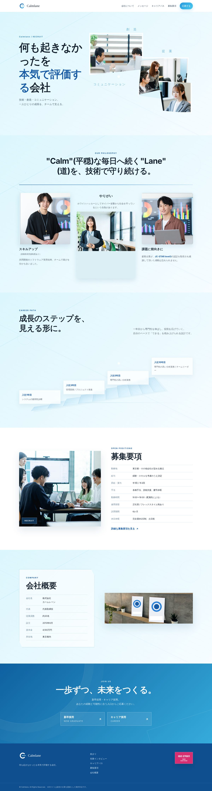
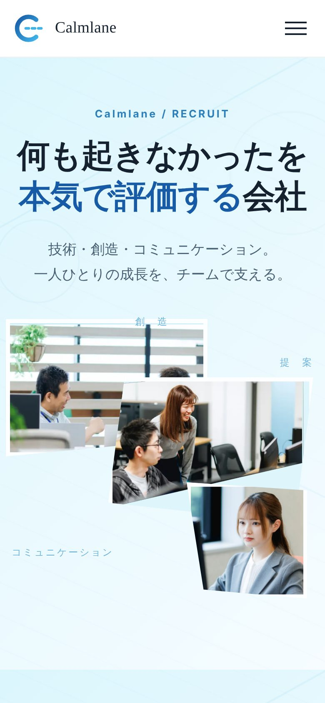

Calmlane 採用サイト
架空のセキュリティ企業の採用サイト / デザイン・コーディング


↕ 画面の中をスクロールすると全体が見られます
- 制作期間
- 【約2週間】
- 担当範囲
- 【企画・デザイン】
- 使用ツール
- HTML / CSS / VS Code /Figma/ＡＩ
- 対応
- PC / タブレット / スマートフォン
制作の目的・ターゲット
【サイバーセキュリティに特化した会社の求人サイトで、中途採用枠の20～30代の人です。】
コンセプト
「何も起きなかった」を本気で評価する会社、というコピーを軸にしました。事故を未然に防ぐセキュリティの仕事は成果が見えにくいため、その価値を誇りとして伝えることを目指しています。
デザインのポイント
- 配色 青からシアンのグラデーションを基調に、信頼感と清潔感を表現しました。背景には細い線と円のパターンを重ね、ネットワークを思わせる奥行きを出しています。
- ファーストビュー 斜めに切り抜いた写真3枚と「創造・提案・コミュニケーション」の文字を重ね、チームで働く雰囲気が一目で伝わるコラージュにしました。
- キャリアパス 入社1年目から10年目までを階段状の図で見せ、成長のステップが直感的にわかるようにしました。
- レスポンシブ 1100px・900px・768px・560pxでレイアウトを切り替え、スマートフォンではハンバーガーメニューと1カラム表示にしています。
苦労した点・学んだこと
【figmaのデザインカンプをＡＩに読み取ってもらう際に、イメージしていたものと乖離があったので、Vs Codeで修正するのに時間がかかりました。】
※実在しない企業を題材にした制作作品です。【写真素材の出典：フリー素材.類似会社ＨＰ】